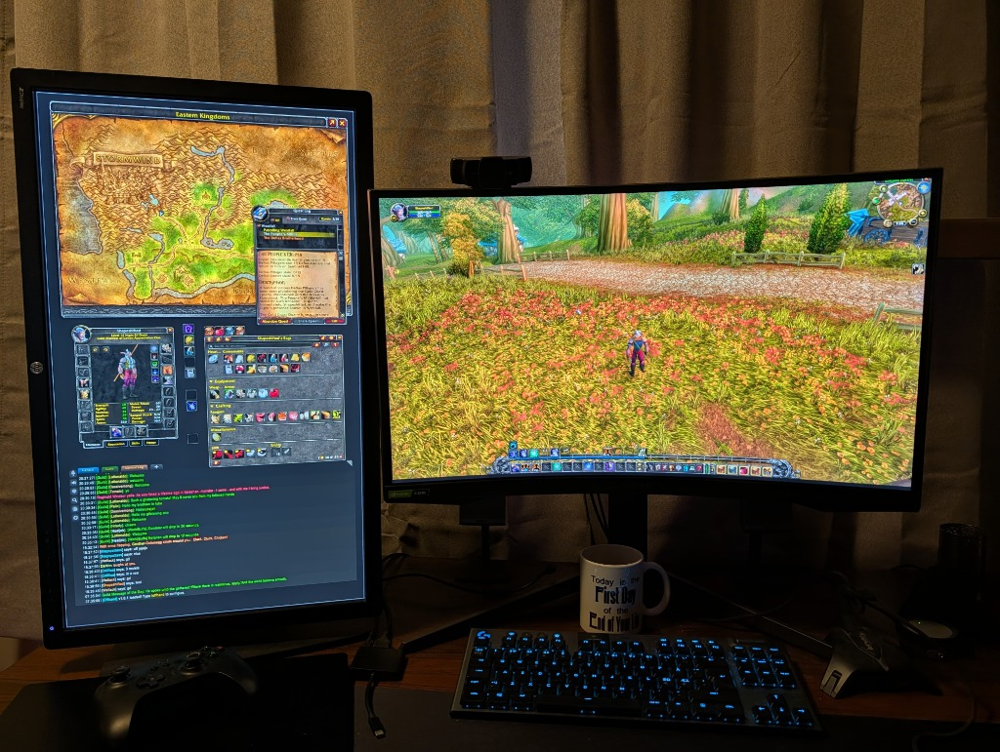
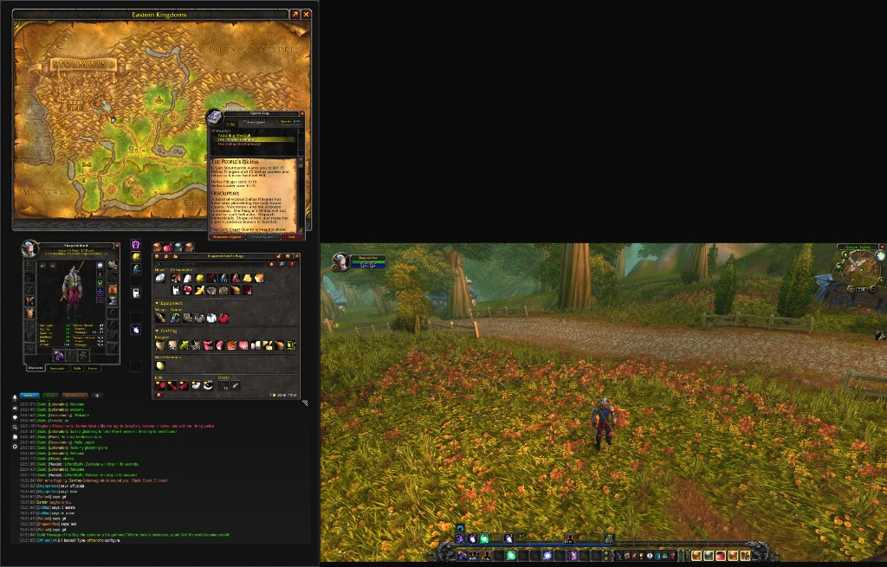
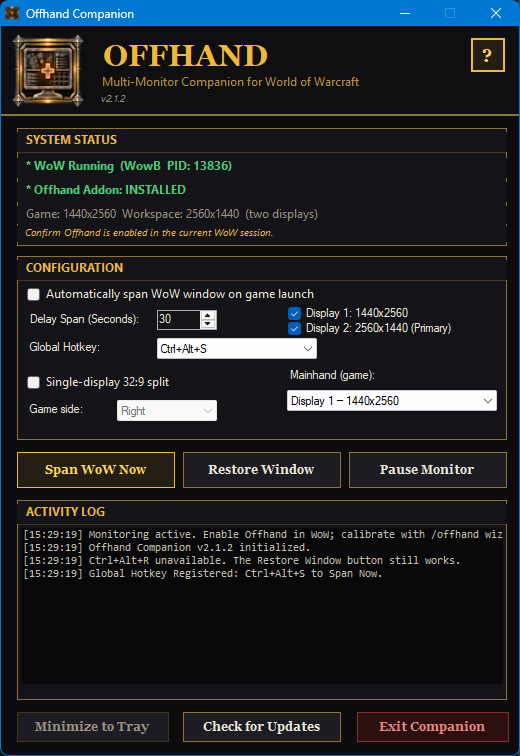
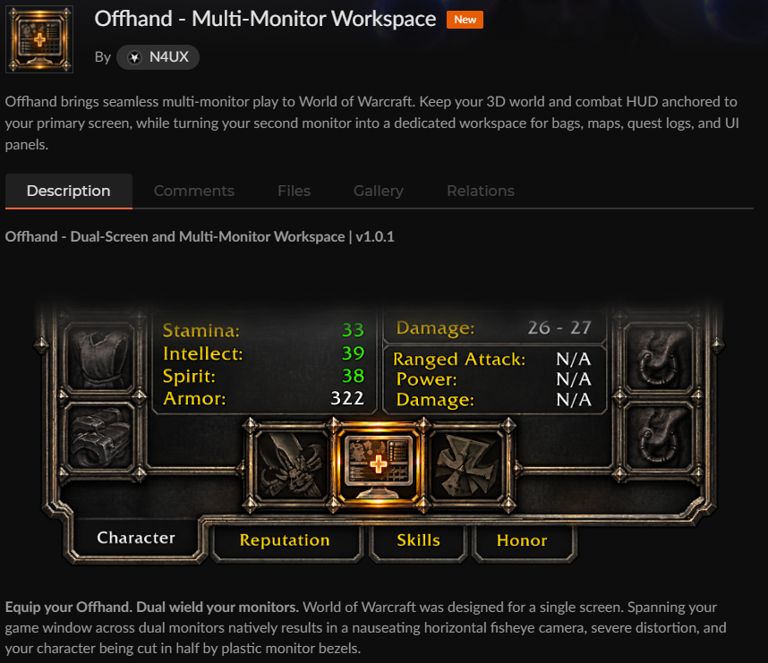
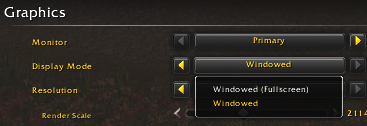
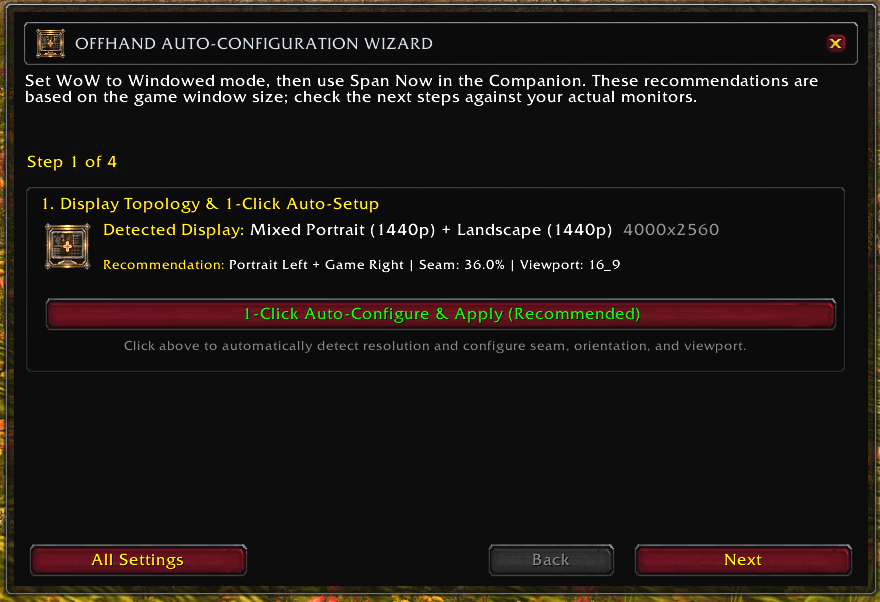

* Note: The black area in this raw screenshot represents physical dead space (where you do not have a monitor). The game seamlessly conforms to your actual screens.
Keep your world map, bags, and character sheet open on your second screen without cluttering your game view. They stay open even while you're moving around the world.
Play on your main screen with a perfectly centered character and combat HUD, exactly how you're used to playing. No weird camera stretching or misplaced action bars.
Engineered for Dual-Screen Gameplay
Designed specifically for WoW players running dual monitors, whether matching screens or asymmetrical portrait + landscape.
1:1 Aspect Ratio Lock
Mathematically isolates 3D viewport coordinates to your primary gaming monitor. Prevents the severe horizontal stretching, camera distortion, and bezel-splitting caused by raw desktop spanning.
Persistent Offhand Monitor
Turns your second display into an expansive Offhand Monitor. Keep your World Map, bags, character sheet, and quest log open simultaneously without frames fighting for screen space or closing when you walk.
Guided Auto-Configuration
Type /offhand in-game. The setup wizard validates your remembered canvas or exact Companion topology, guides seam and Mainhand placement, and finishes the required HUD layout on Forever and Retail.
Combat Safe & Taint Free
Built strictly within Blizzard's secure execution environment. Layout transitions and frame repositioning are deferred safely during combat, ensuring zero Lua taints or UI errors.
Mix & Match Monitors
Got a 4K main screen and a 1080p vertical monitor on the side? No problem. Offhand handles asymmetrical layouts, mixed resolutions, and different refresh rates naturally.
Your Choice of Window Setup
Use Microsoft PowerToys FancyZones, resize WoW manually, or choose the optional open-source Companion for exact borderless geometry and active recovery.
Three ways to place your window
Use FancyZones on Windows, resize WoW manually, or let the optional Companion apply exact borderless geometry. After a successful Companion span, you may exit it and continue playing. Leave it in the tray only for automatic spanning and active recovery features.
WoW Forever's legacy recovery bridge remains available while current client builds are tested for reliable normal SavedVariables cold loading.


Make the Offhand canvas yours
Choose a PNG, JPEG, or WebP image, preview fill and fit behavior, and download a ready-to-install Offhand_UserMedia package.
The image is processed in your browser. It is not uploaded, retained, or sent to Offhand. The media package remains separate from the CurseForge-managed addon so normal updates cannot replace your background.
Get Started in 5 Steps
Follow this once, then verify a cold launch before you settle in.
Install the Addon
Install Offhand via the CurseForge App, WowUp, or manually extract the Offhand folder into your World of Warcraft\_classic_era_\Interface\AddOns\ directory.

Span Your Game Window
Put WoW in standard Windowed mode, then choose one placement method. On Windows, use a saved Microsoft PowerToys FancyZones Canvas zone. You can also resize WoW manually, or use the optional Companion for exact display geometry and a borderless span.
FancyZones: create one cross-monitor Canvas zone, snap WoW into it, then follow the independent setup guide.
Companion: select the displays and Mainhand, then click Span WoW Now. You may exit Companion after spanning unless you want its active automation or recovery features.

Auto-Configure In-Game
Type /offhand guide and choose FancyZones, Companion, or manual placement. FancyZones and manual users visually confirm the window and select Remember Current Window. Companion users reload once after spanning so Offhand can read the exact topology. Then complete every calibration step.

Create the Mainhand HUD Layout
Outside combat with Edit Mode closed, press Create Mainhand HUD Layout on the setup wizard's final step, then reload when prompted. Offhand moves default protected HUD anchors into Mainhand, aligns XP with the Action Button 1/backpack boundaries, and arranges stance, pet, possess, vehicle-exit, encounter, and extra-ability controls above it while preserving custom-positioned source entries. The in-game Recovery & Preview card can rebuild it later. Fine-tune the generated layout in Blizzard Edit Mode; on Forever, designate it with Use Current Edit Mode Layout.
Verify a Cold Launch
Fully exit WoW and relaunch it. Reapply the saved FancyZones zone, manual size, or Companion span, then confirm that workspace panels and the HUD return. A materially different independent window safely falls back to single-screen geometry. On Forever, run /offhand diag and record the persistence and geometry sources.
Frequently Asked Questions
Direct answers to common questions about safety, compatibility, and setup.
How do I set World of Warcraft into Windowed mode?
Offhand requires World of Warcraft to run in standard Windowed mode so the window can span freely across your dual displays. You can set this in three ways:
- In-Game Menu: Press Esc → click Options (or System in Classic) → under Graphics, set Display Mode to Windowed → click Apply.
- Keyboard Shortcut: While World of Warcraft is active and focused, press Alt + Enter to immediately toggle between fullscreen and windowed mode.
-
Config.wtf File: If you cannot open the game, open your
WTF\Config.wtffile in Notepad and add or edit the line:SET gxWindow "1".
How should I place action bars, XP, stance, party, and raid frames?
On Forever and Retail, press Create Mainhand HUD Layout on the setup wizard's final step. It clones the active Blizzard layout instead of directly moving protected frames, translates default anchors into Mainhand, aligns XP with the Action Button 1/backpack boundaries, and arranges stance, pet, possess, vehicle-exit, encounter, and extra-ability controls above it. Reload when prompted, then use Blizzard Edit Mode only for personal adjustments. Recovery & Preview can rebuild the generated layout later. Classic clients without Blizzard Edit Mode use Offhand's direct compatibility layout; custom action-bar addons retain ownership of their own frames.
Does spanning World of Warcraft stretch or distort the 3D camera?
No. Offhand uses native Blizzard viewport coordinate APIs to constrain 3D camera rendering strictly to your primary monitor's pixel bounds. Your camera aspect ratio and field of view remain native 1:1, completely eliminating horizontal fisheye distortion.
Is the desktop companion app required?
No. Microsoft PowerToys FancyZones is the recommended Windows assistant, and ordinary manual resizing works without another application. Offhand remembers and validates the resulting canvas. The optional Companion provides exact borderless geometry and active recovery features, but it may be exited after applying the span. An earlier Forever 1.60.1 build had an intermittent SavedVariables loading defect; its compatibility bridge remains available while newer builds are revalidated through repeated cold launches.
Can I use my own image on the Offhand canvas?
Yes. The Background Studio converts PNG, JPEG, or WebP images locally in your browser and creates a separate Offhand_UserMedia addon folder. Your image is not uploaded. Keeping that folder separate also prevents CurseForge updates from replacing your personal background.
Does it work with different monitor sizes and vertical screens?
Yes. The Companion passes the exact Windows rectangle for the explicit Mainhand and workspace displays. Mixed resolutions and heights, portrait/landscape pairs, stacked screens, negative desktop coordinates, ultrawide or 32:9 Mainhand displays, and unequal alignment therefore use native geometry instead of a guessed combined-resolution preset.
Can I use one 49-inch 32:9 screen, or a 32:9 Mainhand plus another monitor?
For one super-ultrawide, select only it in the Companion, enable Single-display 32:9 split, and choose which half contains the game. For a 32:9 game screen plus a separate workspace screen, leave split mode disabled, select both displays, and choose the 32:9 display as Mainhand (game).
What happens if my second monitor is disconnected?
Offhand fails safely. The Companion remembers displays by Windows identity and refuses to collapse a two-display profile onto the remaining screen. The addon rejects the stale geometry and restores a full-window viewport. Use Restore Window, reconnect the display, or review the saved selection.
Is Offhand safe and compliant with Blizzard's Terms of Service?
Yes. The in-game addon uses standard Blizzard UI APIs. The open-source Companion does not inspect game memory or automate gameplay. It resizes the WoW desktop window and, while WoW is closed, refreshes only Offhand's own recovery bridge file for Forever cold-launch restoration.
For Windows, install it from the official Microsoft Store listing. Microsoft reviewed and signs the Store package, and Microsoft Store manages its updates. Linux/Wine users and anyone who prefers a direct portable download can use the official GitHub release, compare its SHA-256 hash with checksums-sha256.txt, and verify its GitHub artifact attestation. The Companion does not require administrator access, install a service, inject into WoW, collect telemetry, or read browser data or credentials. Store installations open Microsoft Store for updates; portable installations query GitHub only when you select Check for Updates. Full behavior, build, and verification details are published in the security guide.
The Store package passed Microsoft certification and is signed by Microsoft. Microsoft Security Intelligence also reviewed exact earlier portable hashes without retaining a malware detection. Some VirusTotal engines may still assign the separate unsigned GitHub Companion generic machine-learning or heuristic labels; each vendor controls its own verdict. An Edge “isn't commonly downloaded” message is a separate SmartScreen reputation notice. VirusTotal and vendor reviews are useful evidence, but neither a small detection count nor a clean result proves safety. Review the open source and documented behavior, and verify the official checksum and GitHub build provenance before running a portable copy.
Which versions of World of Warcraft are supported?
Offhand supports WoW Forever (1.60.x), Retail, Classic Era and Hardcore, and progression/Anniversary Classic clients. Forever has a distinct Mainline-style UI and therefore uses Blizzard Edit Mode for protected action bars and combat frames.
Why must Forever use Blizzard Edit Mode?
Forever protects action bars, unit frames, and other combat UI. Offhand can safely restore ordinary workspace panels such as the map, character frame, backpack, and chat, but protected frames must remain owned by Blizzard Edit Mode. The setup wizard therefore creates and selects a Mainhand-safe Blizzard layout through its final player-click action. Use Blizzard Edit Mode for personal fine-tuning, and use Recovery & Preview to rebuild or designate the layout later.